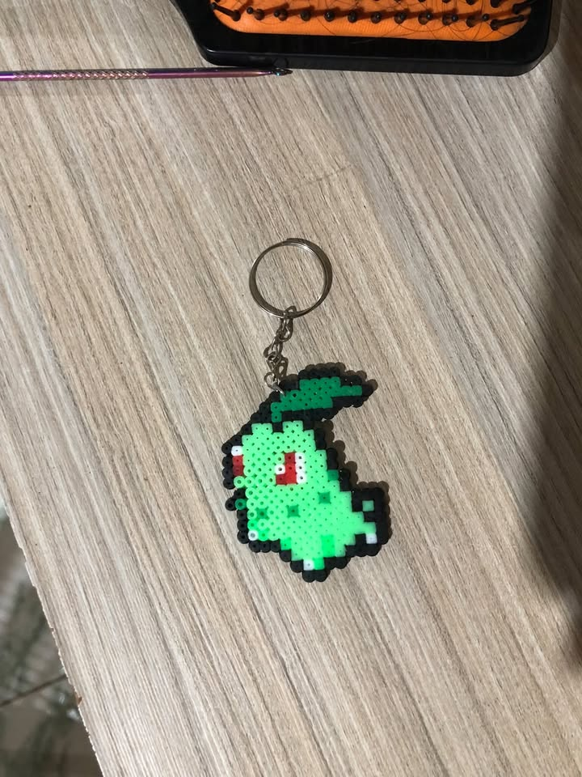
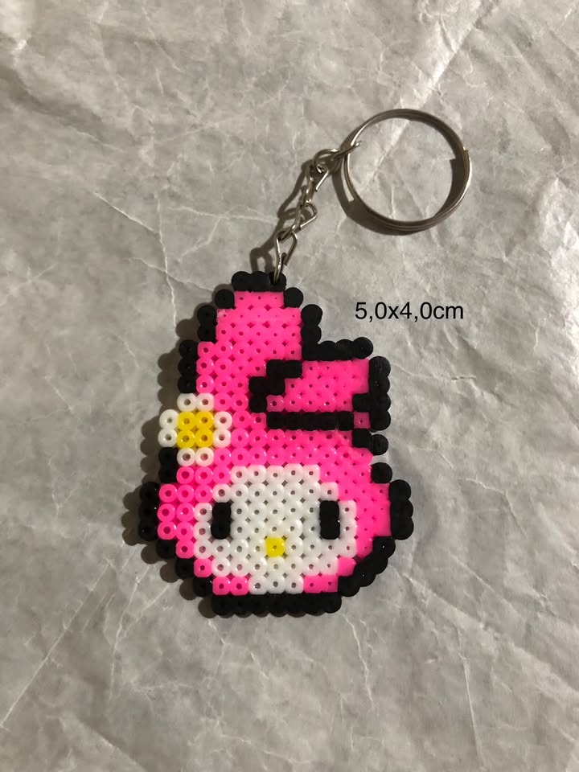
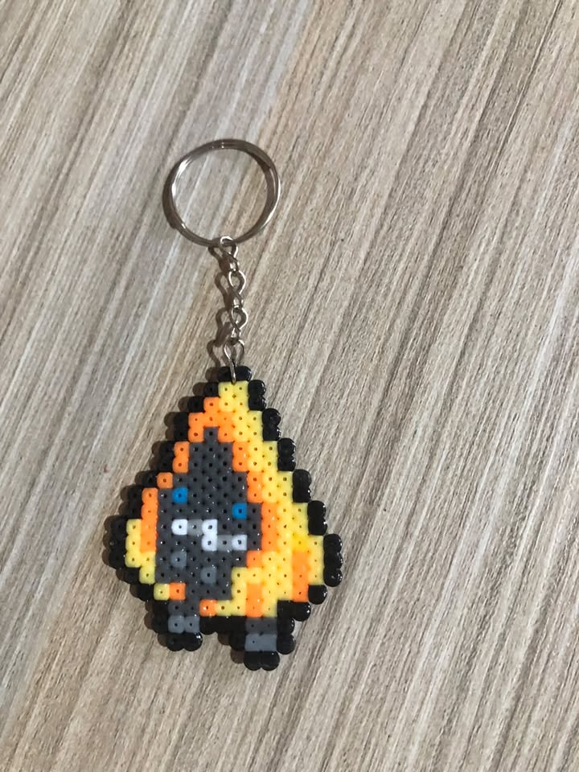
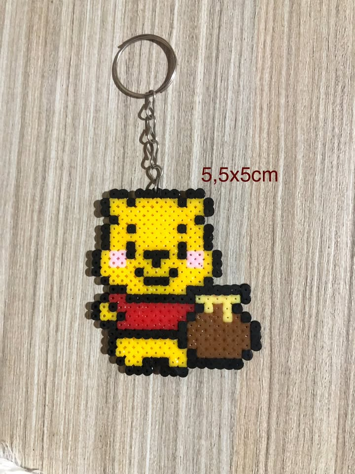
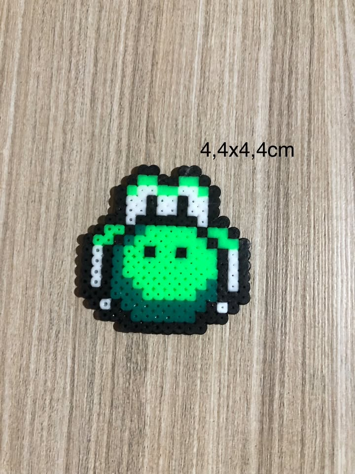

Chikorita

Chaveiro artesanal de pokemon.
Loja de chaveiros feitos com Perler Beads
Conheça nossa coleção de chaveiros artesanais feitos com Perler Beads.

Chaveiro artesanal de pokemon.

Chaveiro artesanal da personagem My Melody.
Preço: R$ 12,00
Ver detalhes
Chaveiro personalizado de Nossa Senhora Aparecida.

Chaveiro artesanal em formato de Pokemon.

Chaveiro inspirado no personagem Ursinho Pooh.

Chaveiro inspirado no personagem Yoshi.